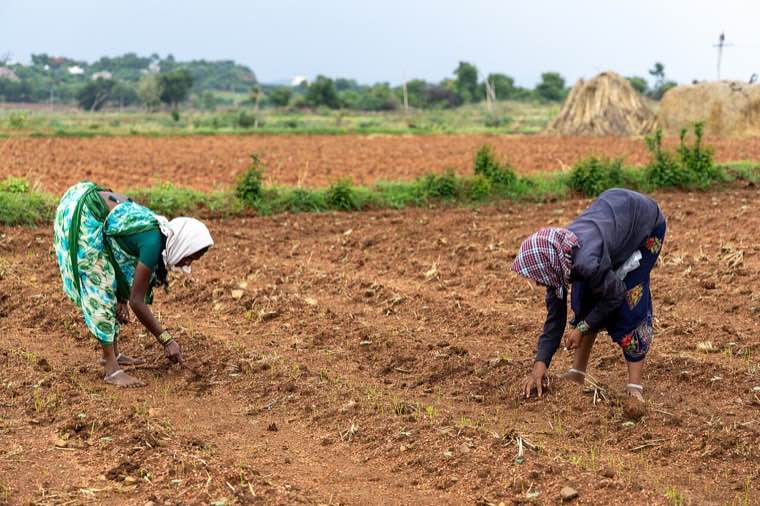
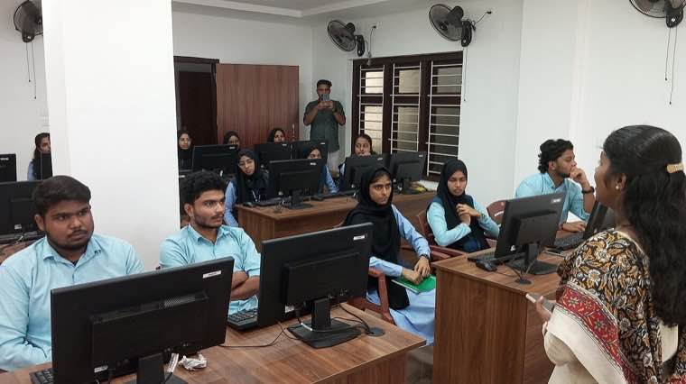

Top governance innovations — every month
A curated list of impactful initiatives from across India and the world — each summarised with what worked, what didn't, and what travels well.
Mission Karmayogi
India — Civil services capacityA digital learning platform building a future-ready civil service through role-based capability building and continuous learning.
Read summaryEstonia's e-Residency & e-Governance
Estonia — Digital stateA whole-of-government digital platform where 99% of public services are available online — and the underlying once-only principle.
Read summary
Bhoomi (Karnataka)
India — Land records pioneerOne of India's earliest large-scale land record digitisation programmes — lessons that still shape state-level land governance today.
Read summarySingapore HDB
Singapore — Public housing at scalePublic housing that 80%+ of the country lives in — and the institutional design that made dignity-by-default an outcome, not an aspiration.
Read summaryBrazil's Bolsa Família
Brazil — Conditional cash transferOne of the world's largest conditional cash transfer programmes — and a hard look at what targeting, conditionalities and delivery cost vs. deliver.
Read summary
Telangana T-SAT
India — Edu-broadcastMass-reach satellite-based education during and after the pandemic — how a low-cost broadcast layer extended formal education.
Read summaryImplementation-ready manuals
Field-tested handbooks for specific governance functions. Written for the officer who has to make the next decision, not the researcher who has to write the next paper.
Grievance redressal playbook
Drawn from the Oppam model — a process-first approach to cutting redressal time by 80%+ without buying new software.
Read playbookDisaster response playbook
From Kerala Rescue and Covid Jagrata — coordination, command, communication, and the politics of letting civilians inside the tent.
Read playbookDigital land records playbook
From Ente Bhoomi and ILIMS — three departments, one truth, a thirty-day objection window, and the inter-departmental MoU that made it possible.
Read playbookUniversal housing playbook
From Udayam — the woman's-title default, the ward-sabha verification, and the convergence engine that turned housing into welfare delivery.
Read playbookPublic health digitisation playbook
From eHealth Kerala — patient-centric records, clinician co-design, and the long-horizon investment that paid off during the pandemic.
Read playbookForest Rights implementation playbook
From Wayanad's FRA reform — joint verification, reasoned orders, and the procedural moves that turn rejection into a path, not a wall.
Read playbookVoices from the field
Senior officers, academics, and domain experts — writing about the parts of governance that don't fit into a circular.
The Collector's calendar
On how a senior officer's diary, more than her dashboards, signals what the district actually cares about.
Read columnWhen data lies politely
A reflection on the gap between what dashboards show and what the field experiences — and what to do about it.
Read columnThe most underrated office
Why the ward sabha is, dollar for dollar, the most productive piece of Indian governance — and how to make it stronger.
Read columnConvergence without coercion
Lessons from running multi-department missions where no department wants to be the loser.
Read columnProcurement is policy
How what the state buys shapes what the state becomes — and why procurement reform is the quietest culture change there is.
Read columnHiring for the public interest
What we look for, what we miss, and what the civil services exam tests vs. what the job actually rewards.
Read columnEvidence-backed publications
Deeper publications you can cite — written with academic rigour but practitioner sensibility.
Reverse Quarantine — a public-health innovation
How an outreach-driven shielding strategy reduced mortality among the elderly and comorbid in Kerala's early Covid waves.
Read the caseTime savings as a civic dividend
Modelling the citizen time savings of Ente Bhoomi against pre-digitisation baselines.
Read the caseThe grievance gap
An evidence review of grievance redressal performance across Indian states — and what high performers do differently.
Read the caseConvergence at the address
A study of household-level convergence between housing, health, education and livelihoods in Kerala's Udayam programme.
Read the caseMonthly Innovation Digest in your inbox.
Curated, no spam, easy to skim. Officers, researchers, and the policy-curious — welcome.